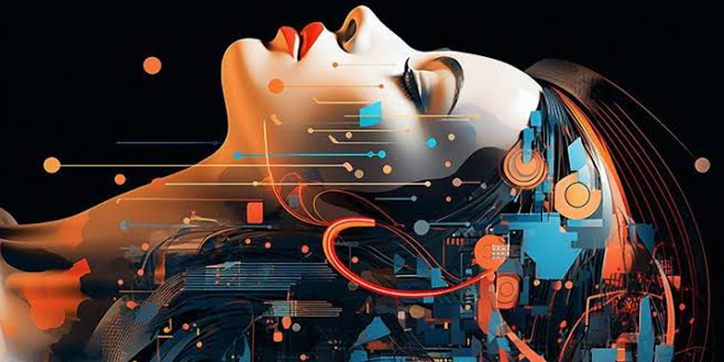
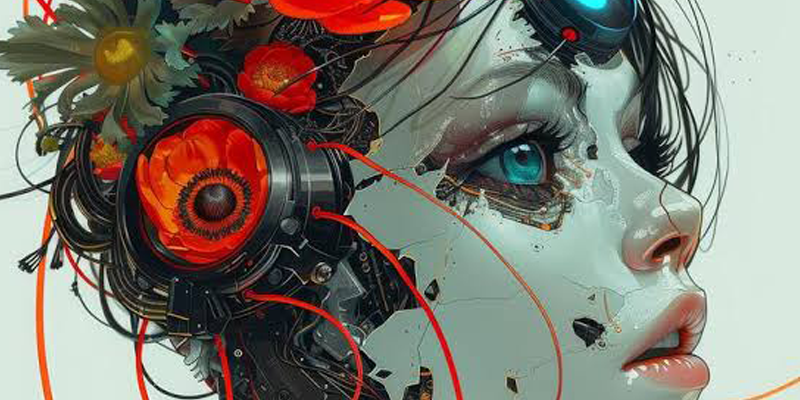

.jpeg)
AI Image Studio — สร้างภาพจากจินตนาการ
หนึ่งในความสามารถที่โดดเด่นของ AI ในปัจจุบัน คือการสร้างภาพจากข้อความ ผู้ใช้งานสามารถอธิบายสิ่งที่ต้องการให้ AI สร้าง แล้วระบบสามารถเปลี่ยนคำอธิบายเหล่านั้นให้กลายเป็นภาพที่มีรายละเอียดตามคำสั่ง การสร้างภาพด้วย AI จึงเปิดโอกาสให้คนทั่วไปสามารถสร้างงานกราฟิกและภาพประกอบได้ แม้จะไม่มีทักษะการวาดภาพแบบมืออาชีพก็ตาม สิ่งสำคัญคือการเรียนรู้วิธีเขียนคำสั่งหรือ Prompt สำหรับภาพให้ละเอียด เช่น ระบุวัตถุหลัก ฉาก สถานที่ สไตล์ แสง สี องค์ประกอบภาพ มุมกล้อง และอัตราส่วนของภาพ ยิ่งอธิบายความต้องการได้ชัดเจนมากเท่าไร ก็ยิ่งช่วยให้ได้ผลลัพธ์ใกล้เคียงกับจินตนาการมากขึ้น


AI สามารถนำไปใช้สร้างภาพได้หลากหลาย เช่น ภาพสินค้า โปสเตอร์ประชาสัมพันธ์ อินโฟกราฟิก ภาพประกอบบทเรียน ภาพสำหรับ Social Media หรือภาพ Concept สำหรับนำไปพัฒนาต่อในโปรแกรมออกแบบ อย่างไรก็ตาม การสร้างภาพด้วย AI ควรมองว่าเป็นจุดเริ่มต้นของกระบวนการสร้างสรรค์ ผู้ใช้งานควรตรวจสอบรายละเอียดของภาพ ความถูกต้องของข้อความ และความเหมาะสมก่อนนำไปเผยแพร่ สิ่งที่จะได้เรียนรู้ พื้นฐานการสร้างภาพด้วย AI เทคนิคเขียน Image Prompt การกำหนดสไตล์ภาพ การกำหนดแสง สี และองค์ประกอบ การสร้างภาพสำหรับงานจริง
back